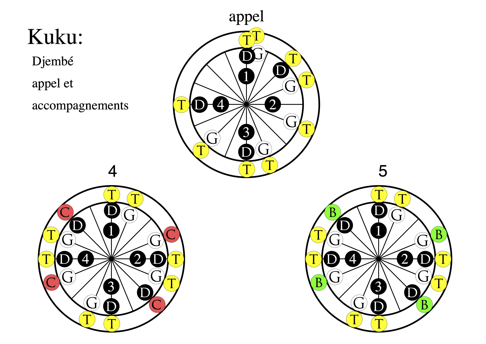
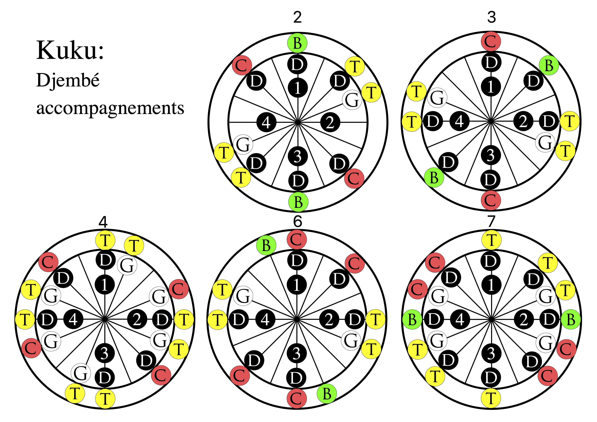

Sorry for my bad French!
Nous continuons d'étudier ce rythme ternaire très important. Voici quelques resources externes et nos resources que je crée pour nous.
Ce groupe offre une vidéo courte mais très bien fait pour ce morceau. Le gars sur la gauche
(de notre point de vue) joue l'appel comme nous puis une version simplifiée de ce que nous appelons
<
Paul Naz au Pays Bas offre une page de son site web complet sur le morceau de Soli Rapie: Il l'attribue des noms différents (Soli / Donba / Soukou / Woimafoli). Pour les accompagnements djembé, il ne donne que les accomagnements un (simplifié comme dans la vidéo ci-dessus) et deux. Les duns sont un peu différents que ce que nous jouons. Soli avec partis duns et djembé..
Voici l'appel et quelques accompagnements. Les numéroes correspond du livre par Paul Naz. Voici son super site web!

